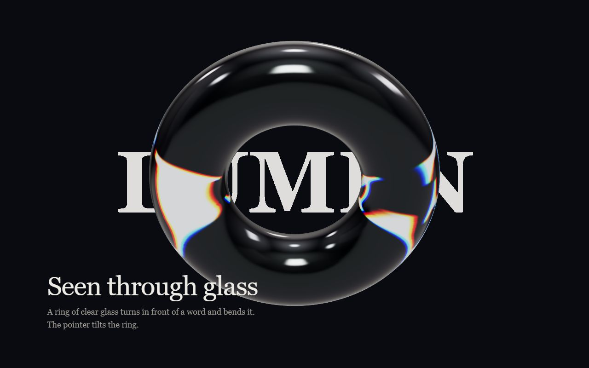

A test page for the glass-object card. The word behind the glass is drawn into the scene so the glass can bend it; the page's own heading is ordinary text.

A ring of clear glass turns in front of a word and bends it. The pointer tilts the ring.
A test page for the glass-object card. The word behind the glass is drawn into the scene so the glass can bend it; the page's own heading is ordinary text.